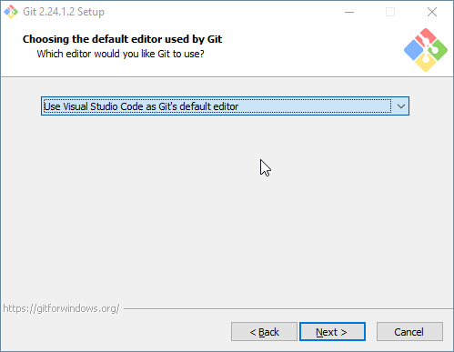

Git for Windows focuses on offering a lightweight, native set of command line and GUI tools that bring the full feature set of the Git Source Code Management (SCM) to Windows while providing appropriate user interfaces for experienced Git users and novices.
2. Configure and Install
- Select the 'Windows Explorer integration' components (recommended)

- Select 'Visual Studio Code' as the default editor (recommended)

- Select 'Git from the command line...' (recommended)

- Select all other defaults